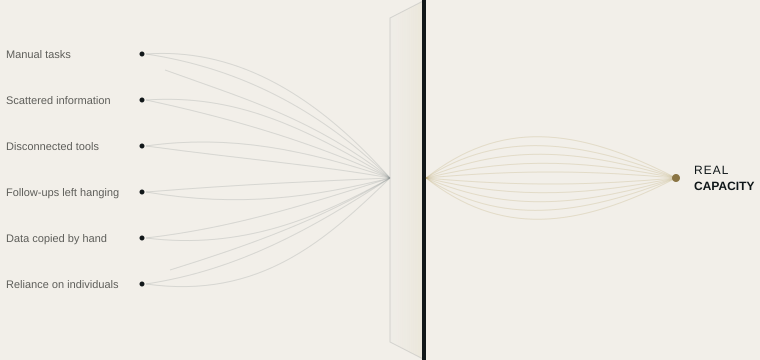

Automation
We turn repetitive tasks into automatic processes, following rules we define with you.
RESOURCE AUTOMATION
Most companies don't need more tools. They need to know where their time, information and attention are slipping away.
SKURX SYSTEMS finds where capacity is being lost and turns it into clearer, connected and more efficient ways of working.
WHAT WE DO
We find where your company is losing capacity and free it up with automation, connected tools and applied artificial intelligence where it makes sense.

OUR SERVICES
We turn repetitive tasks into automatic processes, following rules we define with you.
For what a rule can't solve: AI strengthens your team, it doesn't replace it.
We connect your tools so information flows from one to the next without anyone having to step in.
HOW WE WORK
We don't start from a technology but from a question: where is your company losing capacity, and why?
We get to know your company from the inside, watching how your team works every day.
We pinpoint where time, information or potential clients are being lost, and why.
We tell you what we would change and what isn't worth touching.
We put it in place, test it with you and fine-tune it until it works the way your team needs.
THE FIRST STEP
In one week we analyze how your company works and give you a clear map: what consumes capacity, what can be automated and in what order. The report is yours, whatever you decide.
Every workflow explained in plain language.
Accounts, tools and data are yours.
You can see what each automation has done and when.
If we stop working together, everything is still yours.
EXAMPLES BY SECTOR
Illustrative scenarios based on everyday situations. We work with companies in any sector, all across Spain.
Everything keeps running, even when there's no one left in the office.